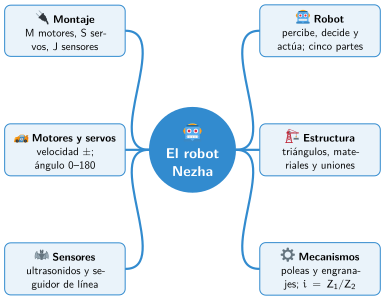

Bloque IV · Robótica y proyectos
UD10 El robot Nezha
Sesiones
- Sesión 10.1 Qué es un robot
- Sesión 10.2 Estructura y materiales
- Sesión 10.3 Poleas y engranajes
- Sesión 10.4 Más rápido o más fuerza: la relación de transmisión
- Sesión 10.5 Montaje del Nezha
- Sesión 10.6 Programar los motores
- Sesión 10.7 Programar los servos
- Sesión 10.8 Programar los sensores
Al terminar la unidad
Mapa mental de la unidad

✏️ Repasa la unidad con el mapa: tapa una rama y explica en voz alta lo que pone.